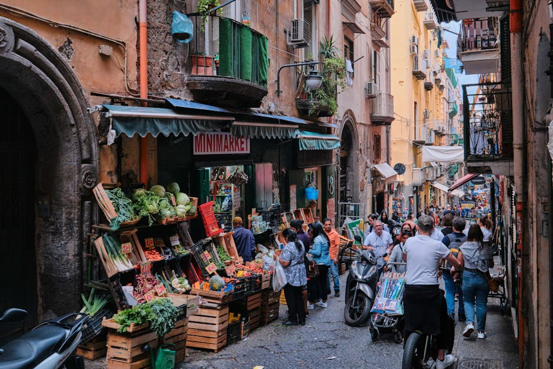
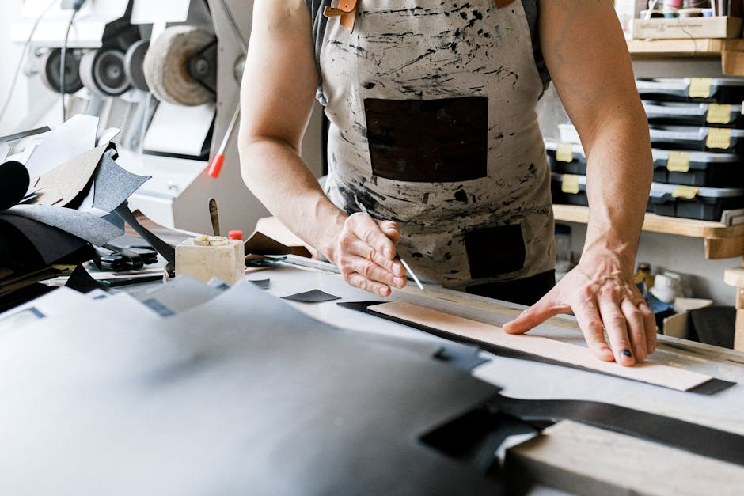
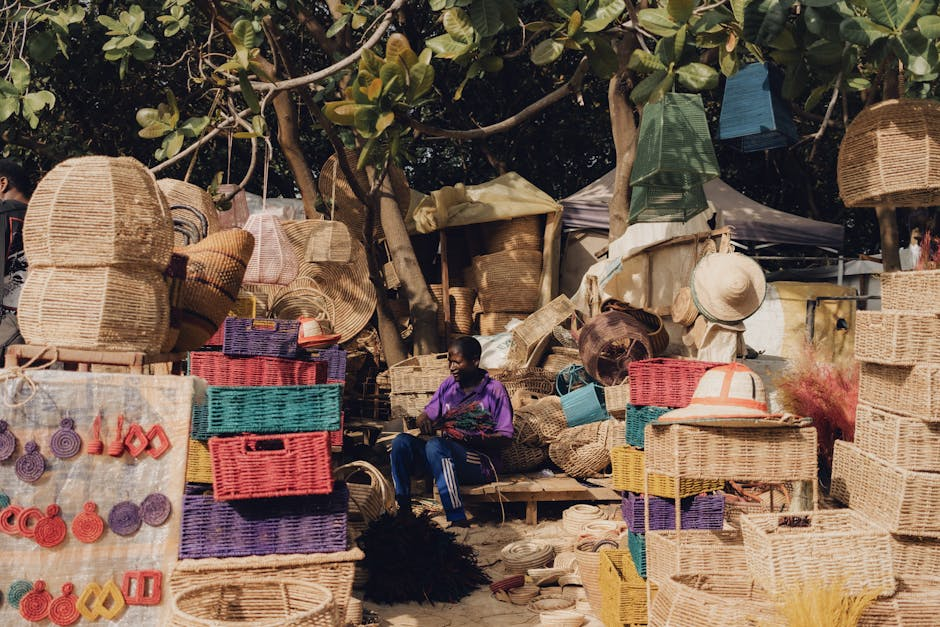

La piattaforma di KitToolTech dedicata alla promozione dei migliori mercati artigianali e delle botteghe storiche d'Italia. Esplora le tradizioni e sostieni i creatori locali.
L'Italia custodisce un patrimonio inestimabile fatto di tradizioni secolari e maestria manuale. La nostra guida ai mercati artigianali nasce con l'obiettivo di condurvi attraverso le più affascinanti botteghe italiane e i mercatini più caratteristici della penisola.
Promuoviamo con passione l'artigianato italiano, dando voce ai maestri che ogni giorno creano opere uniche e prodotti fatti a mano di altissima qualità. Scoprite insieme a noi i segreti di un'arte che si tramanda di generazione in generazione, supportando il talento e l'economia creativa locale.


Scopri le esperienze di chi ha già esplorato l'artigianato italiano con la nostra guida.
"Grazie a questa guida ho scoperto mercati artigianali meravigliosi che non avrei mai trovato da sola. Un viaggio fantastico nel vero artigianato italiano!"
"Le botteghe artigiane consigliate sono autentiche e ricche di storia. Ho ammirato prodotti fatti a mano eccezionali, supportando i veri creatori."
"Una risorsa indispensabile per chi ama esplorare l'Italia meno turistica. I dettagli sui mercatini locali e gli approfondimenti sono sempre accurati."
Tutto ciò che ti serve per esplorare le eccellenze artigiane del territorio italiano.
Scopri gli atelier storici dove il tempo sembra essersi fermato. Ti portiamo all'interno dei laboratori dove prendono vita i migliori prodotti fatti a mano, dalla ceramica alla lavorazione del legno, per farti conoscere i volti dei maestri artigiani.
Resta sempre informato sui mercatini e le fiere artigiane locali. Un'opportunità unica per incontrare direttamente i creatori, ascoltare le loro storie e ammirare l'autentico artigianato italiano esposto nelle piazze più belle d'Italia.

Selezioniamo e raccontiamo le storie dei manufatti più emblematici della nostra tradizione. Impara a riconoscere la qualità dei materiali, la precisione delle lavorazioni manuali e l'unicità di ogni singolo pezzo prodotto artigianalmente.
Percorsi tematici esclusivi pensati per unire la scoperta turistica all'amore per le tradizioni. Esplora borghi pittoreschi e città d'arte seguendo il filo conduttore delle antiche botteghe e dei mestieri storici che hanno reso celebre l'Italia nel mondo.
Tutto quello che c'è da sapere sulla nostra piattaforma.
È una piattaforma editoriale e promozionale ideata per farvi scoprire le migliori botteghe artigiane italiane e i mercatini locali. Raccogliamo storie, indirizzi e approfondimenti per valorizzare l'artigianato italiano.
No, il nostro sito è puramente informativo e promozionale. Non effettuiamo vendite dirette. Se trovate prodotti fatti a mano che vi interessano, vi invitiamo a contattare o visitare direttamente l'artigiano o la bottega segnalata.
Valutiamo l'autenticità, la storicità e la qualità della lavorazione manuale. Ci concentriamo su quelle realtà che mantengono vive le vere tradizioni dell'artigianato italiano, privilegiando tecniche antiche e materiali di pregio.
La disponibilità varia a seconda della regione e del periodo. Molti mercatini sono stagionali o legati a specifiche festività, mentre alcune botteghe artigiane sono aperte stabilmente. Consigliamo sempre di verificare gli orari aggiornati presso i canali ufficiali degli organizzatori locali.
In quanto operatori promozionali indipendenti, non offriamo garanzie dirette sugli oggetti. Qualsiasi questione relativa a resi, garanzie o rimborsi è gestita esclusivamente dal venditore o dall'artigiano da cui si effettua l'acquisto finale.
Hai suggerimenti su nuove botteghe da includere? Scrivici.